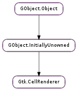

| Subclasses: | Anjuta.CellRendererCaptionedImage, Gtk.CellRendererPixbuf, Gtk.CellRendererProgress, Gtk.CellRendererSpinner, Gtk.CellRendererText, Gtk.CellRendererToggle |
|---|
| activate(event, widget, path, background_area, cell_area, flags) | |
| get_aligned_area(widget, flags, cell_area) | |
| get_alignment() | |
| get_fixed_size() | |
| get_padding() | |
| get_preferred_height(widget) | |
| get_preferred_height_for_width(widget, width) | |
| get_preferred_size(widget) | |
| get_preferred_width(widget) | |
| get_preferred_width_for_height(widget, height) | |
| get_request_mode() | |
| get_sensitive() | |
| get_size(widget, cell_area) | |
| get_state(widget, cell_state) | |
| get_visible() | |
| is_activatable() | |
| render(cr, widget, background_area, cell_area, flags) | |
| set_alignment(xalign, yalign) | |
| set_fixed_size(width, height) | |
| set_padding(xpad, ypad) | |
| set_sensitive(sensitive) | |
| set_visible(visible) | |
| start_editing(event, widget, path, background_area, cell_area, flags) | |
| stop_editing(canceled) |
| Name | Type | Flags | Description |
|---|---|---|---|
| cell-background | str | w | Cell background color as a string |
| cell-background-gdk | Gdk.Color | r/w | Cell background color as a Gdk.Color |
| cell-background-rgba | Gdk.RGBA | r/w | Cell background color as a Gdk.RGBA |
| cell-background-set | bool | r/w | Whether the cell background color is set |
| editing | bool | r | Whether the cell renderer is currently in editing mode |
| height | int | r/w | The fixed height |
| is-expanded | bool | r/w | Row is an expander row, and is expanded |
| is-expander | bool | r/w | Row has children |
| mode | Gtk.CellRendererMode | r/w | Editable mode of the CellRenderer |
| sensitive | bool | r/w | xlib.Display the cell sensitive |
| visible | bool | r/w | xlib.Display the cell |
| width | int | r/w | The fixed width |
| xalign | float | r/w | The x-align |
| xpad | int | r/w | The xpad |
| yalign | float | r/w | The y-align |
| ypad | int | r/w | The ypad |
| Name | Parameters | Return | Description |
|---|---|---|---|
| editing-canceled | This signal gets emitted when the user cancels the process of editing a cell. For example, an editable cell renderer could be written to cancel editing when the user presses Escape. See also: Gtk.CellRenderer.stop_editing (). | ||
| editing-started | Gtk.CellEditable, str | This signal gets emitted when a cell starts to be edited. The intended use of this signal is to do special setup on editable, e.g. adding a Gtk.EntryCompletion or setting up additional columns in a Gtk.ComboBox. Note that GTK+ doesn’t guarantee that cell renderers will continue to use the same kind of widget for editing in future releases, therefore you should check the type of editable before doing any specific setup, as in the following example: .. code-block:: c static void text_editing_started (GtkCellRenderer *cell, GtkCellEditable *editable, const gchar *path, gpointer data) { if (GTK_IS_ENTRY (editable)) { GtkEntry *entry = GTK_ENTRY (editable); /* ... create a GtkEntryCompletion */ gtk_entry_set_completion (entry, completion); } } |
| Name | Type | Access |
|---|---|---|
| parent_instance | GObject.InitiallyUnowned | r |
Bases: GObject.InitiallyUnowned
The Gtk.CellRenderer is a base class of a set of objects used for rendering a cell to a cairo.Context. These objects are used primarily by the Gtk.TreeView widget, though they aren’t tied to them in any specific way. It is worth noting that Gtk.CellRenderer is not a Gtk.Widget and cannot be treated as such.
The primary use of a Gtk.CellRenderer is for drawing a certain graphical elements on a cairo.Context. Typically, one cell renderer is used to draw many cells on the screen. To this extent, it isn’t expected that a CellRenderer keep any permanent state around. Instead, any state is set just prior to use using GObject.Objects property system. Then, the cell is measured using Gtk.CellRenderer.get_size (). Finally, the cell is rendered in the correct location using Gtk.CellRenderer.render ().
There are a number of rules that must be followed when writing a new Gtk.CellRenderer. First and foremost, it’s important that a certain set of properties will always yield a cell renderer of the same size, barring a Gtk.Style change. The Gtk.CellRenderer also has a number of generic properties that are expected to be honored by all children.
Beyond merely rendering a cell, cell renderers can optionally provide active user interface elements. A cell renderer can be activatable like Gtk.CellRendererToggle, which toggles when it gets activated by a mouse click, or it can be editable like Gtk.CellRendererText, which allows the user to edit the text using a Gtk.Entry. To make a cell renderer activatable or editable, you have to implement the Gtk.CellRendererClass.activate or Gtk.CellRendererClass.start_editing virtual functions, respectively.
Many properties of Gtk.CellRenderer and its subclasses have a corresponding “set” property, e.g. “cell-background-set” corresponds to “cell-background”. These “set” properties reflect whether a property has been set or not. You should not set them independently.
| Parameters: |
|
|---|---|
| Returns: | True if the event was consumed/handled |
| Return type: |
Passes an activate event to the cell renderer for possible processing. Some cell renderers may use events; for example, Gtk.CellRendererToggle toggles when it gets a mouse click.
| Parameters: |
|
|---|---|
| Return type: | aligned_area: cairo.RectangleInt |
Gets the aligned area used by cell inside cell_area. Used for finding the appropriate edit and focus rectangle.
| Return type: | xalign: float, yalign: float |
|---|
Fills in xalign and yalign with the appropriate values of cell.
| Return type: | width: int, height: int |
|---|
Fills in width and height with the appropriate size of cell.
| Return type: | xpad: int, ypad: int |
|---|
Fills in xpad and ypad with the appropriate values of cell.
| Parameters: | widget (Gtk.Widget) – the Gtk.Widget this cell will be rendering to |
|---|---|
| Return type: | minimum_size: int, natural_size: int |
Retreives a renderer’s natural size when rendered to widget.
| Parameters: |
|
|---|---|
| Return type: |
Retreives a cell renderers’s minimum and natural height if it were rendered to widget with the specified width.
| Parameters: | widget (Gtk.Widget) – the Gtk.Widget this cell will be rendering to |
|---|---|
| Return type: | minimum_size: Gtk.Requisition, natural_size: Gtk.Requisition |
Retrieves the minimum and natural size of a cell taking into account the widget’s preference for height-for-width management.
| Parameters: | widget (Gtk.Widget) – the Gtk.Widget this cell will be rendering to |
|---|---|
| Return type: | minimum_size: int, natural_size: int |
Retreives a renderer’s natural size when rendered to widget.
| Parameters: |
|
|---|---|
| Return type: |
Retreives a cell renderers’s minimum and natural width if it were rendered to widget with the specified height.
| Returns: | The Gtk.SizeRequestMode preferred by this renderer. |
|---|---|
| Return type: | Gtk.SizeRequestMode |
Gets whether the cell renderer prefers a height-for-width layout or a width-for-height layout.
| Returns: | True if the cell renderer is sensitive |
|---|---|
| Return type: | bool |
Returns the cell renderer’s sensitivity.
| Parameters: |
|
|---|---|
| Return type: |
Obtains the width and height needed to render the cell. Used by view widgets to determine the appropriate size for the cell_area passed to Gtk.CellRenderer.render (). If cell_area is not None, fills in the x and y offsets (if set) of the cell relative to this location.
Please note that the values set in width and height, as well as those in x_offset and y_offset are inclusive of the xpad and ypad properties.
| Parameters: |
|
|---|---|
| Returns: | the widget state flags applying to cell |
| Return type: |
Translates the cell renderer state to Gtk.StateFlags, based on the cell renderer and widget sensitivity, and the given Gtk.CellRendererState.
| Returns: | True if the cell renderer is visible |
|---|---|
| Return type: | bool |
Returns the cell renderer’s visibility.
| Returns: | True if the cell renderer can do anything when activated |
|---|---|
| Return type: | bool |
Checks whether the cell renderer can do something when activated.
| Parameters: |
|
|---|
Invokes the virtual render function of the Gtk.CellRenderer. The three passed-in rectangles are areas in cr. Most renderers will draw within cell_area ; the xalign, yalign, xpad, and ypad fields of the Gtk.CellRenderer should be honored with respect to cell_area. background_area includes the blank space around the cell, and also the area containing the tree expander; so the background_area rectangles for all cells tile to cover the entire window.
| Parameters: |
|
|---|
Sets the renderer’s alignment within its available space.
| Parameters: |
|---|
Sets the renderer size to be explicit, independent of the properties set.
| Parameters: |
|---|
Sets the renderer’s padding.
| Parameters: | sensitive (bool) – the sensitivity of the cell |
|---|
Sets the cell renderer’s sensitivity.
| Parameters: | visible (bool) – the visibility of the cell |
|---|
Sets the cell renderer’s visibility.
| Parameters: |
|
|---|---|
| Returns: | A new Gtk.CellEditable, or None |
| Return type: |
Passes an activate event to the cell renderer for possible processing.
| Parameters: | canceled (bool) – True if the editing has been canceled |
|---|
Informs the cell renderer that the editing is stopped. If canceled is True, the cell renderer will emit the Gtk.CellRenderer ::editing-canceled signal.
This function should be called by cell renderer implementations in response to the Gtk.CellEditable ::editing-done signal of Gtk.CellEditable.